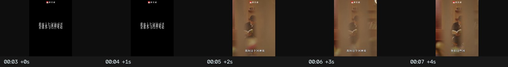
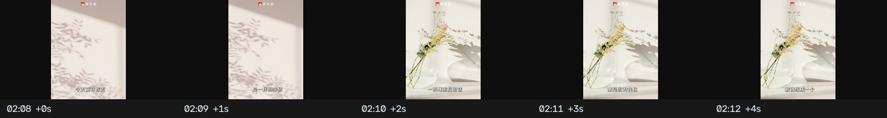
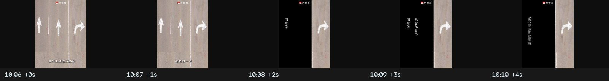
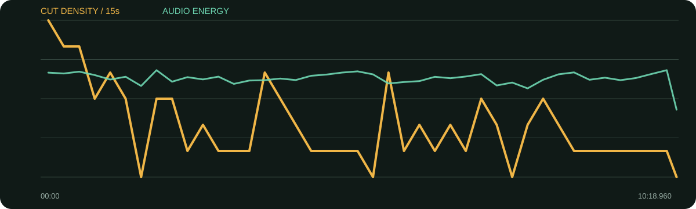

景别 / 机位系统
- 暖棕空间内以中景/近景两档为主
- 黑卡、花灯影、书、纸张、手部构成静物系统
- 偶尔旧节目/图示作为论据
- 镜头中位数约4.2秒，语句完整度优先
它把“绕路”做成形式：开头不是直线进入问答，而是人物原声、黑卡、灯影空镜、再一张问题卡、书与手，绕一圈后进入正文。中后段以两档景别为主，少量物件插入负责换气。
口径说明：候选镜头由场景检测生成，闪光、人物快速动作、数字推拉和图形变化都可能误触发；逐秒重点由真实原片、字幕语义和全片总览人工选择。字幕来自本地中文语音识别，人名、品牌名与行业词可能有误，不把自动转写当逐字稿。
每张总览按时间顺序覆盖全片。它用于检查章节、B-roll密度和景别回环；详细切点以候选镜头表与下面的逐秒重点为准。
| 时间 | 章节 | 内容推进 | 剪辑任务 |
|---|---|---|---|
| 00:00–00:24 | 河流寓言式片头 | 人声、黑卡、灯影、书与手共同提出“为什么要绕”。 | 多次停顿后才进入正式自我介绍。 |
| 00:24–02:03 | 直线是错觉 | 懒惰、成功与成就感。 | 两档景别稳定承接比喻。 |
| 02:03–04:05 | 感受力胜过生产力 | 重复生活、房租、种田与离开一小步。 | 长答案中用纸张/物件短暂换气。 |
| 04:05–06:05 | 自己定义赢 | 媒体收视、RQ精神与拒绝单一赛道。 | 笑点和例子保留完整反应。 |
| 06:05–08:09 | 电视与电影的弯路 | 电影理想、电视速度与实际快乐。 | 旧节目/经历素材证明转向。 |
| 08:09–10:19 | 绕过问题，选择自己的故事 | 克服不了的困难、拖延、弯路与独一无二。 | 镜头渐稳，最后以河流/故事图示收束。 |
静物B-roll数量不多但高度统一：光影/花、书、纸、手都与“感受、绕路、自己的故事”相容；旧节目素材承担经历证据。
综合音轨能量偏低且较平稳，适合长访谈呼吸；未分离背景音乐，不能确认具体旋律与乐器。
每张长图从左到右为真实的连续秒点。重点不是记住截图，而是看清一组画面怎样“进入—完成任务—退出”。
画面事实先给奇异比喻，不解释栏目背景。
怎么复现开场用一个可视化比喻，比直接总结观点更有吸引力。

画面事实画面清零，观众被迫停下来读。
怎么复现黑卡不超过两行，停留时间按正常默读计算。
画面事实问题后不立即回答，先把抽象比喻变成气氛。
怎么复现静物必须与主题同气质，且有微小光影变化。
画面事实重复提问结构加深母题，再回人物答案。
怎么复现两张问题卡应推进而非重复同一句。
画面事实物件把“自己的故事”落到可触摸的媒介。
怎么复现拍书不要只拍封面，补翻页、手指、光影。
画面事实人生选择不再只是口述。
怎么复现先在A-roll说到经历，再用档案盖住下一句起点。

画面事实密集观点中短暂降低面部信息。
怎么复现长答案每90—150秒安排一个主题物件。
画面事实重复片头母题，使长片视觉形成回环。
怎么复现重复同一物件时改变景别或光线，不能原样复制。
画面事实手势成为语义重音，隐藏句间压缩。
怎么复现手部镜头保留原声连续，避免假同步。

画面事实开头寓言在结尾得到视觉回答。
怎么复现结尾应回答开头提出的问题，形成首尾回环。

| 观察项 | 15秒窗口 |
|---|---|
| 视觉最密 | 00:00–00:15（24.0 候选切镜/分）；00:15–00:30（20.0 候选切镜/分）；00:30–00:45（20.0 候选切镜/分） |
| 视觉最缓 | 01:30–01:45（0.0 候选切镜/分）；05:15–05:30（0.0 候选切镜/分）；07:30–07:45（0.0 候选切镜/分） |
| 综合音轨最强 | 10:00–10:15（-24.3 dBFS）；01:45–02:00（-24.3 dBFS）；05:00–05:15（-24.7 dBFS） |
“视觉最密/最缓”基于自动候选切镜；“综合音轨最强”包含人声、环境声、音乐和音效，不能单独当作配乐音量。平均综合音轨为 -26.55 dBFS，最高15秒窗口 -24.31 dBFS，最低15秒窗口 -35.64 dBFS。
| # | 入点 | 出点 | 时长 | 代表帧秒点 | 证据 |
|---|---|---|---|---|---|
| 1 | 00:00.000 | 00:03.000 | 3.00s | 0.750000s | 自动候选 |
| 2 | 00:03.000 | 00:04.840 | 1.84s | 3.750000s | 自动候选 |
| 3 | 00:04.840 | 00:07.680 | 2.84s | 5.590000s | 自动候选 |
| 4 | 00:07.680 | 00:09.880 | 2.20s | 8.430000s | 自动候选 |
| 5 | 00:09.880 | 00:11.320 | 1.44s | 10.528000s | 自动候选 |
| 6 | 00:11.320 | 00:13.040 | 1.72s | 12.070000s | 自动候选 |
| 7 | 00:13.040 | 00:16.120 | 3.08s | 13.790000s | 自动候选 |
| 8 | 00:16.120 | 00:20.200 | 4.08s | 16.870000s | 自动候选 |
| 9 | 00:20.200 | 00:23.280 | 3.08s | 20.950000s | 自动候选 |
| 10 | 00:23.280 | 00:25.120 | 1.84s | 24.030000s | 自动候选 |
| 11 | 00:25.120 | 00:27.280 | 2.16s | 25.870000s | 自动候选 |
| 12 | 00:27.280 | 00:29.920 | 2.64s | 28.030000s | 自动候选 |
| 13 | 00:29.920 | 00:31.000 | 1.08s | 30.406000s | 自动候选 |
| 14 | 00:31.000 | 00:33.240 | 2.24s | 31.750000s | 自动候选 |
| 15 | 00:33.240 | 00:35.920 | 2.68s | 33.990000s | 自动候选 |
| 16 | 00:35.920 | 00:38.800 | 2.88s | 36.670000s | 自动候选 |
| 17 | 00:38.800 | 00:40.000 | 1.20s | 39.340000s | 自动候选 |
| 18 | 00:40.000 | 00:41.440 | 1.44s | 40.648000s | 自动候选 |
| 19 | 00:41.440 | 00:45.320 | 3.88s | 42.190000s | 自动候选 |
| 20 | 00:45.320 | 00:47.800 | 2.48s | 46.070000s | 自动候选 |
| 21 | 00:47.800 | 00:50.120 | 2.32s | 48.550000s | 自动候选 |
| 22 | 00:50.120 | 00:55.320 | 5.20s | 50.870000s | 自动候选 |
| 23 | 00:55.320 | 01:01.320 | 6.00s | 56.070000s | 自动候选 |
| 24 | 01:01.320 | 01:04.280 | 2.96s | 62.070000s | 自动候选 |
| 25 | 01:04.280 | 01:07.320 | 3.04s | 65.030000s | 自动候选 |
| 26 | 01:07.320 | 01:11.480 | 4.16s | 68.070000s | 自动候选 |
| 27 | 01:11.480 | 01:14.560 | 3.08s | 72.230000s | 自动候选 |
| 28 | 01:14.560 | 01:17.640 | 3.08s | 75.310000s | 自动候选 |
| 29 | 01:17.640 | 01:20.480 | 2.84s | 78.390000s | 自动候选 |
| 30 | 01:20.480 | 01:22.480 | 2.00s | 81.230000s | 自动候选 |
| 31 | 01:22.480 | 01:27.760 | 5.28s | 83.230000s | 自动候选 |
| 32 | 01:27.760 | 01:33.160 | 5.40s | 88.510000s | 自动候选 |
| 33 | 01:33.160 | 01:47.000 | 13.84s | 93.910000s | 自动候选 |
| 34 | 01:47.000 | 01:48.000 | 1.00s | 107.450000s | 自动候选 |
| 35 | 01:48.000 | 01:52.800 | 4.80s | 108.750000s | 自动候选 |
| 36 | 01:52.800 | 01:56.320 | 3.52s | 113.550000s | 自动候选 |
| 37 | 01:56.320 | 02:03.600 | 7.28s | 117.070000s | 自动候选 |
| 38 | 02:03.600 | 02:06.800 | 3.20s | 124.350000s | 自动候选 |
| 39 | 02:06.800 | 02:09.640 | 2.84s | 127.550000s | 自动候选 |
| 40 | 02:09.640 | 02:12.320 | 2.68s | 130.390000s | 自动候选 |
| 41 | 02:12.320 | 02:15.160 | 2.84s | 133.070000s | 自动候选 |
| 42 | 02:15.160 | 02:25.800 | 10.64s | 135.910000s | 自动候选 |
| 43 | 02:25.800 | 02:31.360 | 5.56s | 146.550000s | 自动候选 |
| 44 | 02:31.360 | 02:35.680 | 4.32s | 152.110000s | 自动候选 |
| 45 | 02:35.680 | 02:40.440 | 4.76s | 156.430000s | 自动候选 |
| 46 | 02:40.440 | 02:52.040 | 11.60s | 161.190000s | 自动候选 |
| 47 | 02:52.040 | 02:56.320 | 4.28s | 172.790000s | 自动候选 |
| 48 | 02:56.320 | 03:03.880 | 7.56s | 177.070000s | 自动候选 |
| 49 | 03:03.880 | 03:14.680 | 10.80s | 184.630000s | 自动候选 |
| 50 | 03:14.680 | 03:20.760 | 6.08s | 195.430000s | 自动候选 |
| 51 | 03:20.760 | 03:25.280 | 4.52s | 201.510000s | 自动候选 |
| 52 | 03:25.280 | 03:31.440 | 6.16s | 206.030000s | 自动候选 |
| 53 | 03:31.440 | 03:33.680 | 2.24s | 212.190000s | 自动候选 |
| 54 | 03:33.680 | 03:38.680 | 5.00s | 214.430000s | 自动候选 |
| 55 | 03:38.680 | 03:41.400 | 2.72s | 219.430000s | 自动候选 |
| 56 | 03:41.400 | 03:44.760 | 3.36s | 222.150000s | 自动候选 |
| 57 | 03:44.760 | 03:47.360 | 2.60s | 225.510000s | 自动候选 |
| 58 | 03:47.360 | 03:49.680 | 2.32s | 228.110000s | 自动候选 |
| 59 | 03:49.680 | 03:52.520 | 2.84s | 230.430000s | 自动候选 |
| 60 | 03:52.520 | 03:55.240 | 2.72s | 233.270000s | 自动候选 |
| 61 | 03:55.240 | 04:01.640 | 6.40s | 235.990000s | 自动候选 |
| 62 | 04:01.640 | 04:04.800 | 3.16s | 242.390000s | 自动候选 |
| 63 | 04:04.800 | 04:10.480 | 5.68s | 245.550000s | 自动候选 |
| 64 | 04:10.480 | 04:17.600 | 7.12s | 251.230000s | 自动候选 |
| 65 | 04:17.600 | 04:29.120 | 11.52s | 258.350000s | 自动候选 |
| 66 | 04:29.120 | 04:35.320 | 6.20s | 269.870000s | 自动候选 |
| 67 | 04:35.320 | 04:41.160 | 5.84s | 276.070000s | 自动候选 |
| 68 | 04:41.160 | 04:46.880 | 5.72s | 281.910000s | 自动候选 |
| 69 | 04:46.880 | 04:57.560 | 10.68s | 287.630000s | 自动候选 |
| 70 | 04:57.560 | 05:08.280 | 10.72s | 298.310000s | 自动候选 |
| 71 | 05:08.280 | 05:13.280 | 5.00s | 309.030000s | 自动候选 |
| 72 | 05:13.280 | 05:19.600 | 6.32s | 314.030000s | 自动候选 |
| 73 | 05:19.600 | 05:30.440 | 10.84s | 320.350000s | 自动候选 |
| 74 | 05:30.440 | 05:32.440 | 2.00s | 331.190000s | 自动候选 |
| 75 | 05:32.440 | 05:35.920 | 3.48s | 333.190000s | 自动候选 |
| 76 | 05:35.920 | 05:38.200 | 2.28s | 336.670000s | 自动候选 |
| 77 | 05:38.200 | 05:44.200 | 6.00s | 338.950000s | 自动候选 |
| 78 | 05:44.200 | 05:56.480 | 12.28s | 344.950000s | 自动候选 |
| 79 | 05:56.480 | 05:59.200 | 2.72s | 357.230000s | 自动候选 |
| 80 | 05:59.200 | 06:01.760 | 2.56s | 359.950000s | 自动候选 |
| 81 | 06:01.760 | 06:04.880 | 3.12s | 362.510000s | 自动候选 |
| 82 | 06:04.880 | 06:09.880 | 5.00s | 365.630000s | 自动候选 |
| 83 | 06:09.880 | 06:18.480 | 8.60s | 370.630000s | 自动候选 |
| 84 | 06:18.480 | 06:28.000 | 9.52s | 379.230000s | 自动候选 |
| 85 | 06:28.000 | 06:31.920 | 3.92s | 388.750000s | 自动候选 |
| 86 | 06:31.920 | 06:34.040 | 2.12s | 392.670000s | 自动候选 |
| 87 | 06:34.040 | 06:39.440 | 5.40s | 394.790000s | 自动候选 |
| 88 | 06:39.440 | 06:52.920 | 13.48s | 400.190000s | 自动候选 |
| 89 | 06:52.920 | 06:59.680 | 6.76s | 413.670000s | 自动候选 |
| 90 | 06:59.680 | 07:02.400 | 2.72s | 420.430000s | 自动候选 |
| 91 | 07:02.400 | 07:07.280 | 4.88s | 423.150000s | 自动候选 |
| 92 | 07:07.280 | 07:10.440 | 3.16s | 428.030000s | 自动候选 |
| 93 | 07:10.440 | 07:12.920 | 2.48s | 431.190000s | 自动候选 |
| 94 | 07:12.920 | 07:18.320 | 5.40s | 433.670000s | 自动候选 |
| 95 | 07:18.320 | 07:24.080 | 5.76s | 439.070000s | 自动候选 |
| 96 | 07:24.080 | 07:25.240 | 1.16s | 444.602000s | 自动候选 |
| 97 | 07:25.240 | 07:44.000 | 18.76s | 445.990000s | 自动候选 |
| 98 | 07:44.000 | 07:45.640 | 1.64s | 464.738000s | 自动候选 |
| 99 | 07:45.640 | 07:50.560 | 4.92s | 466.390000s | 自动候选 |
| 100 | 07:50.560 | 07:57.920 | 7.36s | 471.310000s | 自动候选 |
| 101 | 07:57.920 | 08:02.160 | 4.24s | 478.670000s | 自动候选 |
| 102 | 08:02.160 | 08:04.520 | 2.36s | 482.910000s | 自动候选 |
| 103 | 08:04.520 | 08:10.000 | 5.48s | 485.270000s | 自动候选 |
| 104 | 08:10.000 | 08:12.760 | 2.76s | 490.750000s | 自动候选 |
| 105 | 08:12.760 | 08:16.760 | 4.00s | 493.510000s | 自动候选 |
| 106 | 08:16.760 | 08:19.880 | 3.12s | 497.510000s | 自动候选 |
| 107 | 08:19.880 | 08:27.120 | 7.24s | 500.630000s | 自动候选 |
| 108 | 08:27.120 | 08:32.880 | 5.76s | 507.870000s | 自动候选 |
| 109 | 08:32.880 | 08:36.120 | 3.24s | 513.630000s | 自动候选 |
| 110 | 08:36.120 | 08:45.960 | 9.84s | 516.870000s | 自动候选 |
| 111 | 08:45.960 | 08:53.320 | 7.36s | 526.710000s | 自动候选 |
| 112 | 08:53.320 | 09:01.960 | 8.64s | 534.070000s | 自动候选 |
| 113 | 09:01.960 | 09:08.360 | 6.40s | 542.710000s | 自动候选 |
| 114 | 09:08.360 | 09:17.360 | 9.00s | 549.110000s | 自动候选 |
| 115 | 09:17.360 | 09:24.120 | 6.76s | 558.110000s | 自动候选 |
| 116 | 09:24.120 | 09:36.560 | 12.44s | 564.870000s | 自动候选 |
| 117 | 09:36.560 | 09:43.600 | 7.04s | 577.310000s | 自动候选 |
| 118 | 09:43.600 | 09:49.280 | 5.68s | 584.350000s | 自动候选 |
| 119 | 09:49.280 | 09:56.200 | 6.92s | 590.030000s | 自动候选 |
| 120 | 09:56.200 | 10:04.320 | 8.12s | 596.950000s | 自动候选 |
| 121 | 10:04.320 | 10:07.080 | 2.76s | 605.070000s | 自动候选 |
| 122 | 10:07.080 | 10:18.960 | 11.88s | 607.830000s | 自动候选 |